План B: Токио до пятницы, выезд 16.10 после 14:00
Новое 13.10
Токио, работа
Токио +27/+19, 4 ммДождливый день. Для поездки на день из Токио лучше четверг.
Токио или день за городом
Nikko +13/+6, 1 мм, 73%Owakudani +16/+10, сухо, облачно

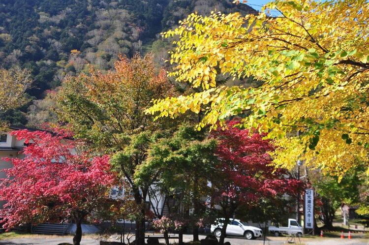


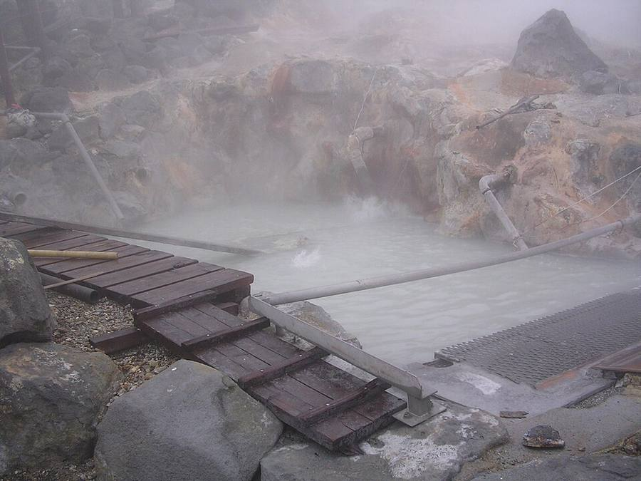

Nikko, около 2 ч в одну сторону: наверху (Yumoto, водопад Ryuzu) цвет уже есть, озеро Chuzenji ещё зелёное, вероятность дождя 73%. Owakudani, около 85 мин + Hakone: пар и чёрные яйца, сухо, но Fuji скорее не видно. Если работать полдня, реально успеть только одно из двух, и это почти весь день в дороге.
После 14:00 → Takayama
Takayama +22/+5, сухо


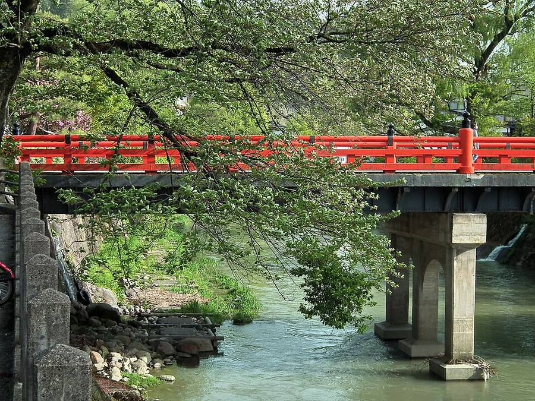
.jpg){kind=link}
Tokyo → Nagoya Shinkansen → экспресс Hida вдоль ущелья, всего около 4,5 ч. В Takayama около 19:00-19:30. Ночь в Takayama, 2 ночи. Вариант: Azusa до Matsumoto (~2 ч 30 мин), там ночь, в субботу Kamikochi и вечером в Takayama, но тогда чемодан едет с тобой.
Kamikochi на день
Kamikochi +16/+5, сухо
_24_Oct,_2011_-_panoramio.jpg){kind=link}

.jpg){kind=link}


Автобус через Hirayu: 60 + 25 мин. Taisho-ike → Kappa-bashi → Myojin-ike. Суббота, людей больше, чем в будни. Пик толпы по прогнозу в вс 18.10.
Takayama утром → Shirakawa-go → Kanazawa
+20/+8, сухо
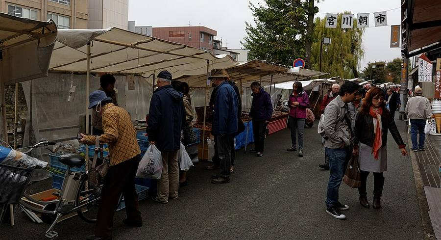
.jpg){kind=link}


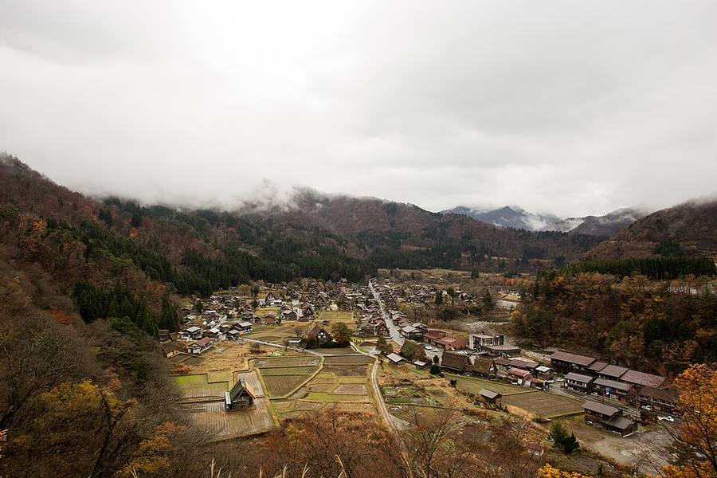
.jpg){kind=link}

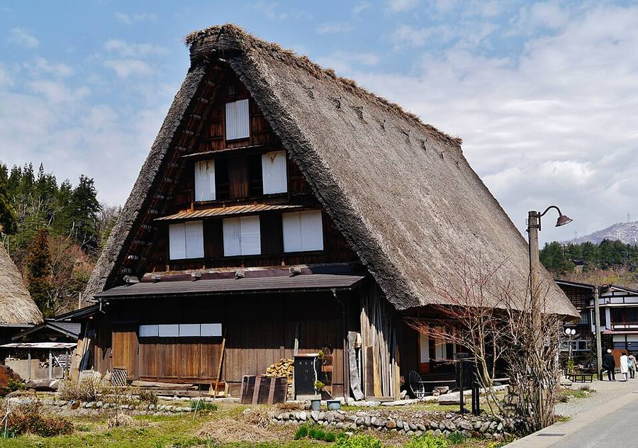

Утренний рынок (с 7:00) и Sanmachi, потом автобус в Shirakawa-go (1 ч 12 мин) и дальше в Kanazawa. Ночь в Kanazawa, 2 ночи.
Kanazawa
Kanazawa +22/+17, дождь 21 мм
.jpg){kind=link}

_in_Kenrokuen_garden,_Kanazawa,_Japan_(2621640037).jpg){kind=link}

.jpg){kind=link}

.jpg){kind=link}
Kenroku-en, Higashi Chaya, Omicho, Nagamachi. Музей XXI века по понедельникам закрыт.
Kyoto
Kyoto +21/+12, сухоСвободный день в Kyoto.
Kyoto: Jidai Matsuri + Kurama
Kyoto +22/+11, сухо


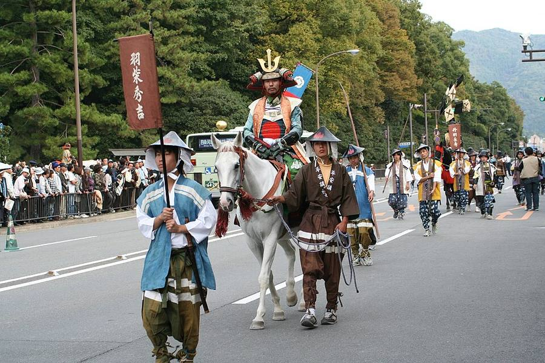


Шествие эпох около 12:00-14:30, вечером с 18:00 огненный фестиваль в Kurama.
На юг: Hiroshima → Beppu → Okinawa
Beppu до +28Naha +25…+29
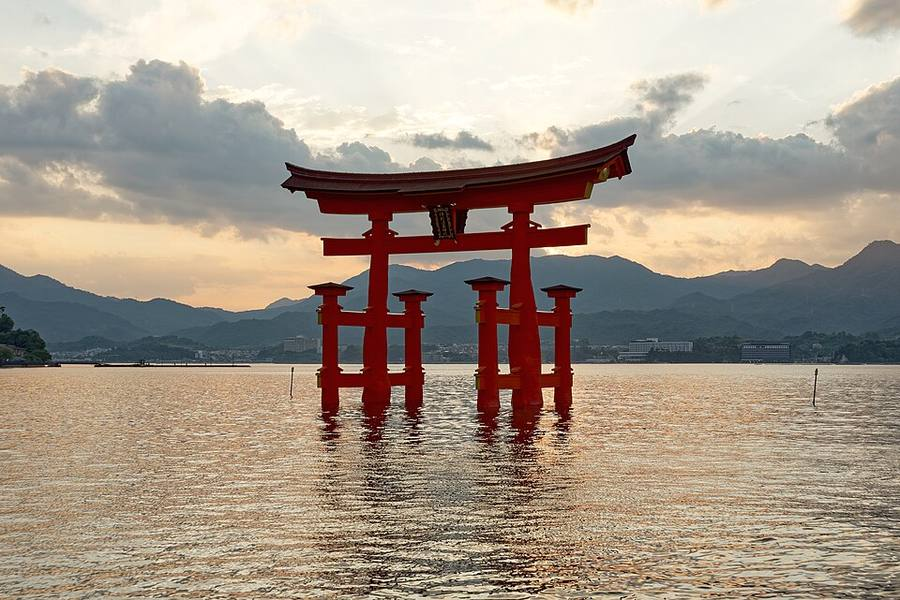


Как в плане A. Выехать из Японии до 08.11 (дата Until на наклейке в паспорте).
Если всё-таки до субботы 17.10
В сб 17.10 рядом с Токио Kawagoe Matsuri (Saitama): парад резных повозок. Потом вечером в Takayama, вс 18.10 Kamikochi (самый людный день), пн 19.10 Takayama (дождь) → Shirakawa-go → Kanazawa, вт 20.10 Kanazawa, ср 21.10 → Kyoto, чт 22.10 фестивали. До Kyoto 22.10 всё равно успеваешь.
Фестивали по датам
| Дата | Что и где | Нам по пути? |
|---|---|---|
| 09-10.10 | Осенний фестиваль Takayama | прошёл повозки в зале Yatai Kaikan |
| 14-15.10 | Nada no Kenka Matsuri, Himeji (святилище Matsubara Hachiman): «драка» тяжёлых паланкинов | только вместо гор |
| 17-18.10 | Kawagoe Matsuri, под Токио (Saitama): парад резных повозок, фестивалю больше 370 лет | если останешься до субботы |
| 17-18.10 | Nagoya Matsuri, парк Hisaya-odori. По обзору, в этом году без парада | слабо |
| 22.10 | Kyoto: Jidai Matsuri днём + Kurama Fire Festival вечером | да, это опорная дата |
Переезды: сколько ехать
| Откуда → куда | Чем | Время | Цена |
|---|---|---|---|
| Shinjuku → Matsumoto | экспресс Azusa | ~2 ч 30 мин | ~6 730 ¥ |
| Matsumoto → Takayama | автобус, бронь | 2 ч 33 мин | 4 400 ¥ |
| Tokyo → Takayama (без Matsumoto) | Shinkansen до Nagoya + экспресс Hida | ~4,5 ч | |
| Takayama → Kamikochi | автобус через Hirayu | 60 + 25 мин | 1 600 + 1 500 ¥, туда-обратно 5 800 ¥ |
| Takayama → Shirakawa-go | автобус Nohi | 1 ч 12 мин | 2 800 ¥ |
| Takayama → Kanazawa (через Shirakawa-go) | автобус Nohi | 2 ч 15 мин | 4 200 ¥ |
| Kanazawa → Kyoto | Shinkansen до Tsuruga + Thunderbird | ~2 ч | ~7 710 ¥ |
| Matsumoto → Toyama (Alpine Route) | автобусы, фуникулёры, канатка, поезд | весь день | 10 850 ¥ (Shinano-Omachi → Toyama) |
| Kyoto → Hiroshima | Shinkansen | ~1 ч 55 мин | |
| Hiroshima → Beppu | Shinkansen до Kokura + Sonic | ~2 ч 12 мин | |
| Fukuoka → Naha | самолёт, много рейсов | ~1 ч 40 мин |
Природа: Nikko, Owakudani и юг
Nikko: листва сейчас

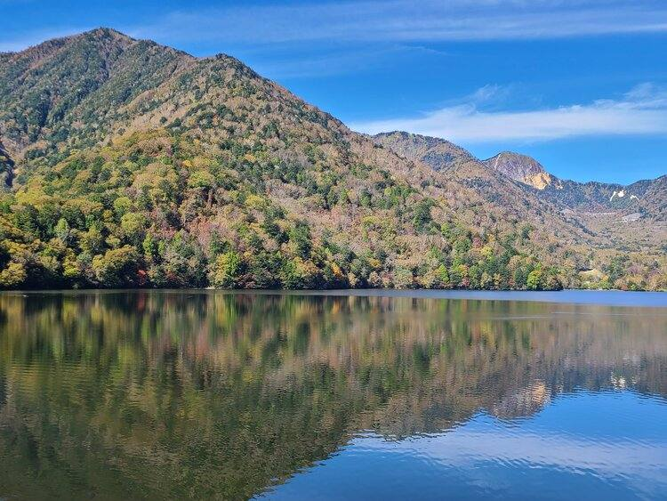

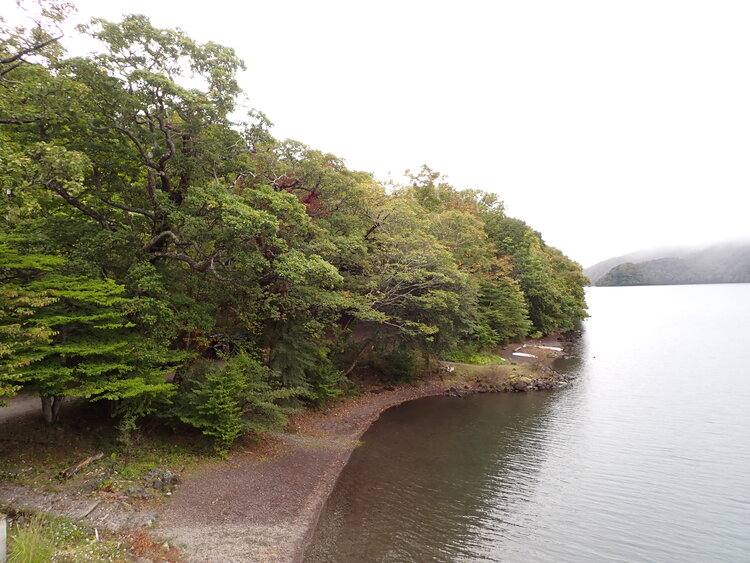
Наверху (Yumoto, водопад Ryuzu) цвет уже есть, озеро Chuzenji ещё зелёное.
Owakudani, «долина гейзеров»

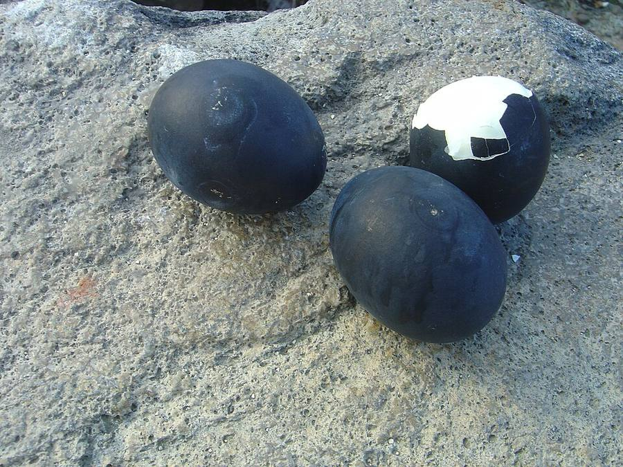

Пар и сера, но настоящих гейзеров нет. Ср 14.10 небольшой дождь, чт 15.10 сухо и облачно.
Похожее на юге: Beppu


Семь «адов» и настоящий гейзер, по пути Kyoto → Okinawa.